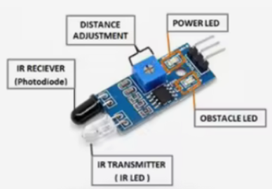
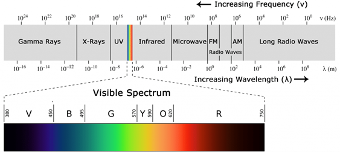

El sensor infrarrojo (IR) para detección de obstáculos es un dispositivo electrónico que utiliza la reflexión de luz infrarroja para determinar la presencia de objetos cercanos. Está compuesto por:
- LED emisor IR: genera un haz de luz infrarroja.
- LED receptor IR (fotodiodo o fototransistor): detecta la luz reflejada por un objeto.
Cuando un objeto se encuentra dentro del rango de detección, la luz infrarroja emitida rebota en su superficie y es captada por el receptor, generando una señal digital que indica su presencia.

-
Características principales
- Rango ajustable: típicamente entre 2 cm y 20 cm.
- Salida digital: valor lógico 0 o 1 según la presencia o ausencia de un objeto.
- Alta inmunidad a interferencias de luz ambiental gracias a la modulación de la señal infrarroja.
-
Principio de funcionamiento
La radiación infrarroja es similar a la luz visible, pero con una longitud de onda mayor (generalmente entre 700 nm y 1 mm), lo que la hace invisible al ojo humano.

En el caso de estos sensores, el emisor IR proyecta un haz que, al reflejarse en un objeto, es captado por el receptor. La electrónica interna del módulo procesa esta señal y entrega un valor lógico que puede ser leído por un microcontrolador como el ESP32.
-
Conexión al ESP32
En el entrenador QMT-020, el módulo IR digital puede conectarse, por ejemplo, al GPIO17 del ESP32:
- VCC: 3.3V o 5V (según especificaciones del módulo).
- GND: Tierra.
- OUT: señal digital conectada al pin de lectura.
-
Lectura en MicroPython
El uso básico del sensor consiste en:
- Configurar el pin como entrada digital con resistencia interna de pull-up (Pin.PULL_UP).
- Leer el valor lógico de salida en un ciclo continuo.
- Tomar decisiones según la detección o no de obstáculos.
Ejemplo básico:
import machine import time ir_sensor = machine.Pin(17, machine.Pin.IN, machine.Pin.PULL_UP) while True: if ir_sensor.value() == 0: print("Obstáculo detectado") else: print("Libre") time.sleep(0.5)
-
Aplicaciones
- Robótica móvil para evitar colisiones.
- Sistemas de conteo de objetos.
- Alarmas de proximidad en zonas restringidas.
- Activadores automáticos para dispositivos.